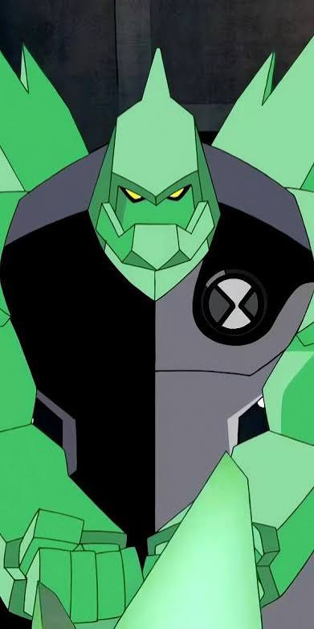

Diamante

Voltar
Descrição do Alien Diamante
O Diamante é um alienígena humanoide composto por um cristal verde extremamente resistente, pertencente à espécie Petrosapien do planeta Petropia.
Ele é uma das transformações clássicas e mais icônicas de Ben Tennyson na franquia Ben 10